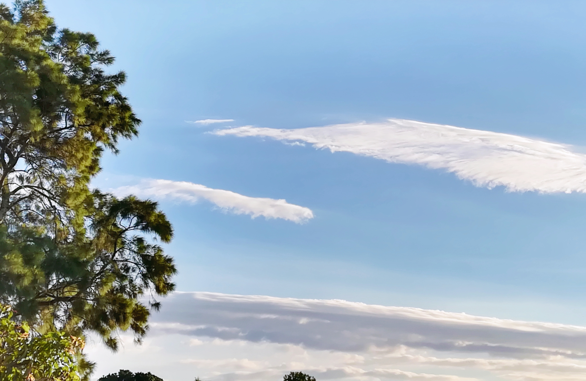
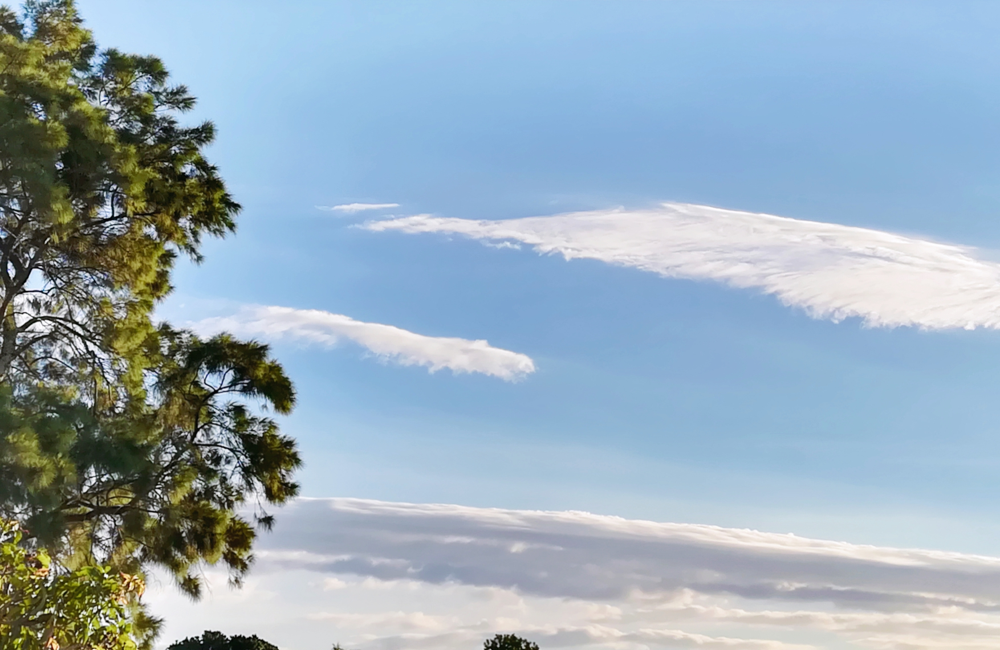
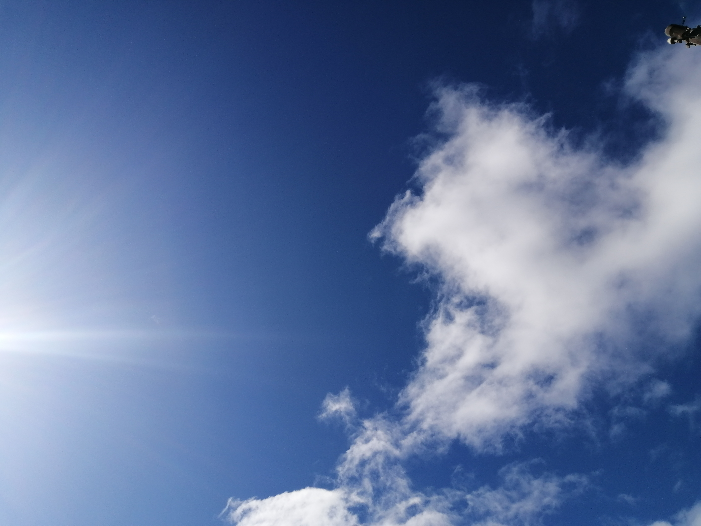
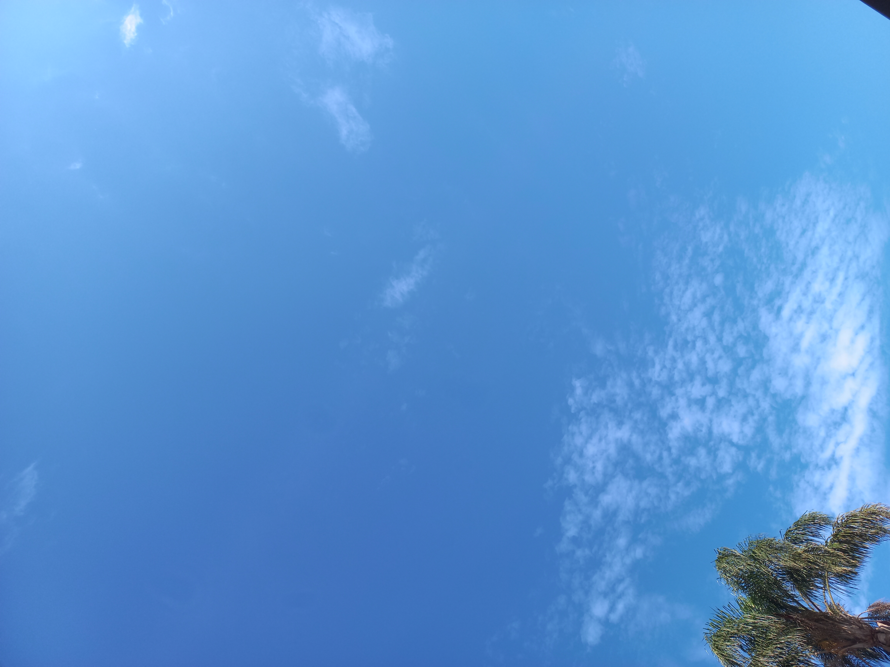
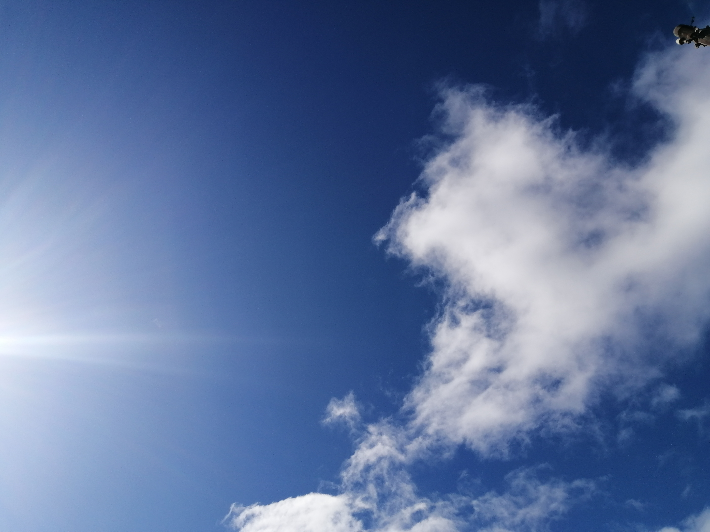
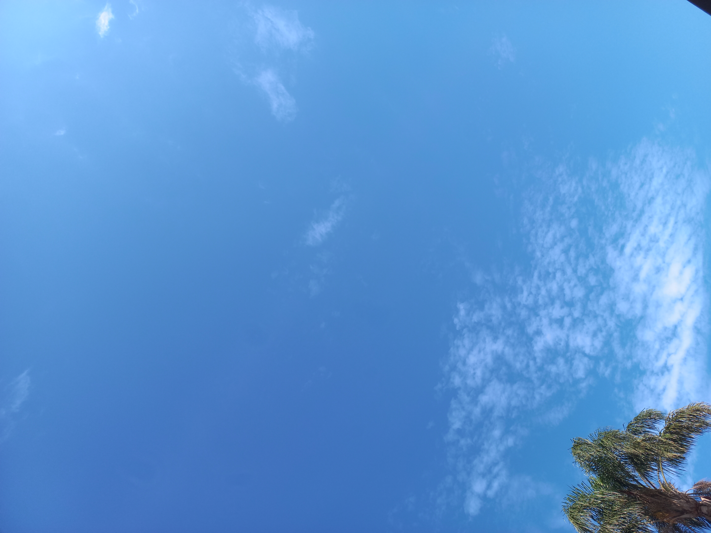

Welcome to VictoriousSkies
my pictures.
my pictures.
Hi! I'm Nikki, a 21 year old who is fond of photographing the sky. A bright, blue sky with cumulus clouds are my favourite. By looking up at the sky, you can see that there are no constraints or boundaries however, there is a vast realm of mysterious experiences beyond our globe from the stunning rainbows, to the golden sun and fluffy clouds all contribute to the breathtaking beauty of the sky. I hope you enjoy the photos that I have taken below.
 


 





Nikita Ramraj
mailto:nikkiii.rj@gmail.com